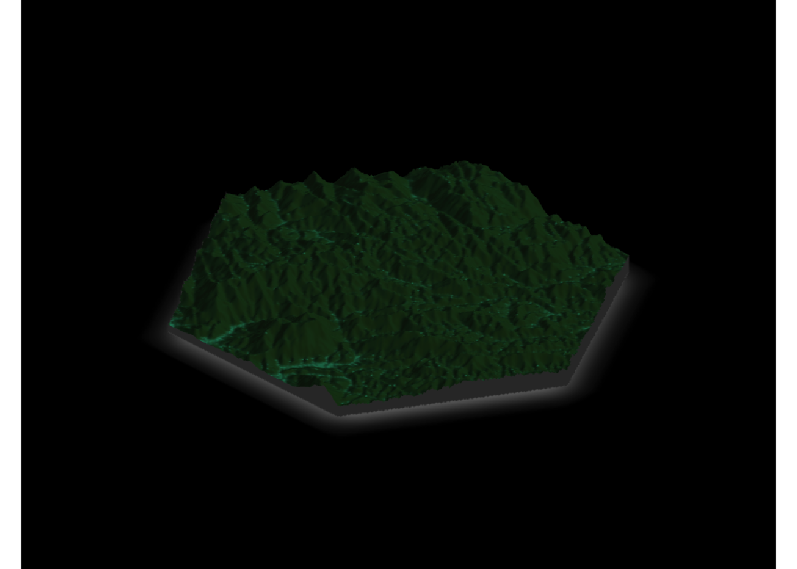

library(ggplot2)
library(sf)
library(raster)
library(rayshader)
library(dplyr)Exploring Rainforests with Rayshader
Day 4 of the #30DayMapChallenge - Something Green
Today’s challenge was to map something green. I’ve been meaning to play around with rayshader a bit and had a nice elevation map of Ranomafana, Madagascar on hand so decided that would be a good start. I used a buffer created around a point I chose to get a nice gradient of elevation near Ranomafana.
dem <- raster("rano_dem.tif")
#crop it to zoom in a bit on Ranomafana
buffer <- data.frame(lon = 47.2,
lat = -21.255) %>%
st_as_sf(coords = c("lon", "lat")) %>%
st_buffer(dist = 0.1)
dem.crop <- crop(dem, buffer)
plot(dem.crop)
plot(buffer, add = T)#transform into matrix for rayshader
dem.mat <- raster_to_matrix(dem.crop)rayshader comes with some built-in texture/colors for the maps, but I wanted one that was a bit more green given the days’ theme. I created a custom one using create_texture.
forest.texture <- create_texture(lightcolor = "#163611",
shadowcolor = "#071104",
leftcolor = "#081c05",
rightcolor = "#162d0d",
centercolor = "#228062")
dem.mat %>%
sphere_shade(sunangle = 35, texture = forest.texture) %>%
plot_3d(heightmap = dem.mat, zscale = 30, fov = 0, theta = 45, zoom = 0.7, phi = 30,
windowsize = c(1000, 800), water = F, baseshape = "hex", background = "black")
render_snapshot(clear = F)
render_snapshot("rayshade-static.png", clear = T)Make it spin! There is a function that does this already, render_movie(), but I wanted mine saved as a gif instead of an avi file, so I used some custom code from Will Bishop.
#source custom function
library(devtools)
source_url("https://raw.githubusercontent.com/wcmbishop/rayshader-demo/master/R/rayshader-gif.R")
n.frames <- 90
#theta is angle of spin
thetas <- seq(0, 360, length.out = n.frames)
dem.mat %>%
sphere_shade(sunangle = 35, texture = forest.texture) %>%
# plot_3d(heightmap = dem.mat, zscale = 30, fov = 0, zoom = 0.7, phi = 30,
# windowsize = c(1000, 800), water = F, baseshape = "hex", background = "black") %>%
save_3d_gif(dem.mat, file = "spin-ray.gif", duration = 6,
solid = TRUE, shadow = TRUE, zscale = 30,
theta = thetas, phi = 30, background = "black", baseshape = "hex")